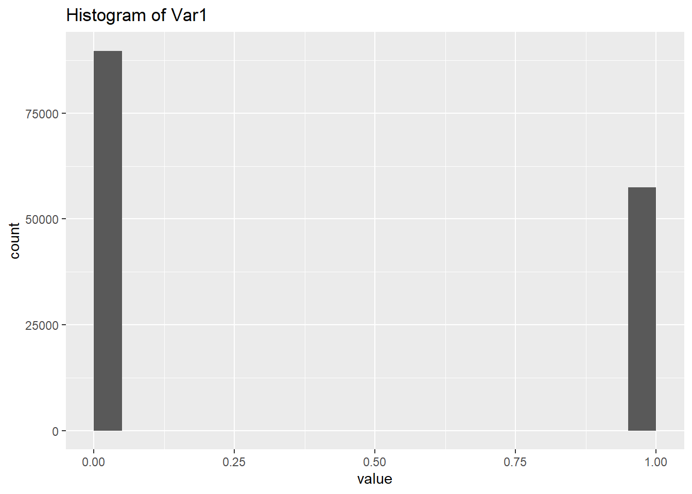
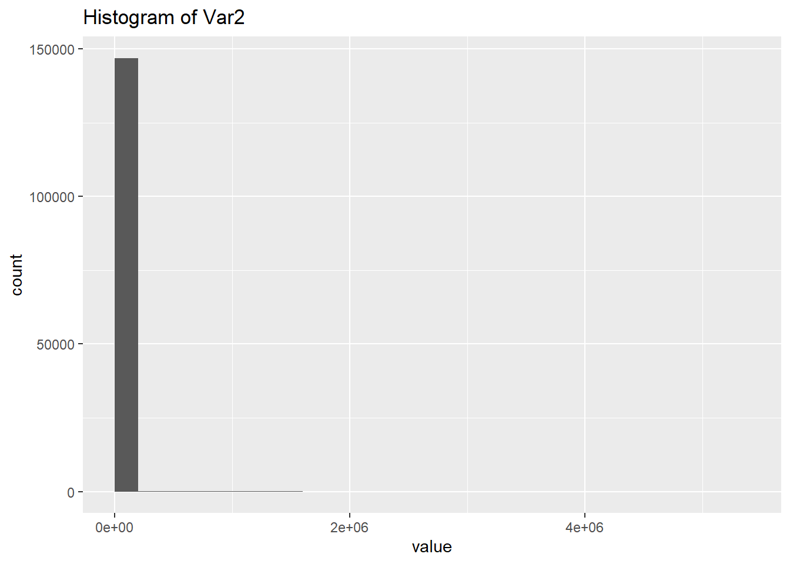
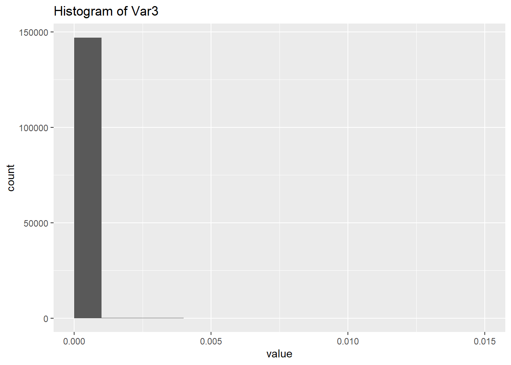

The following objects are masked from 'package:stats':
filter, lag
The following objects are masked from 'package:base':
intersect, setdiff, setequal, union
library(ggstatsplot)
You can cite this package as:
Patil, I. (2021). Visualizations with statistical details: The 'ggstatsplot' approach.
Journal of Open Source Software, 6(61), 3167, doi:10.21105/joss.03167
Cargamos los datos
# Cargar los datosdatos <-read.csv("./name_gender_dataset (1).csv")datos$Gender<-ifelse(datos$Gender =="M", 1, 0)datos.numericos <- datos[, which(unlist(lapply(datos, is.numeric)))]#clase <- datos$Gender <- as.factor(datos$Gender)colnames(datos.numericos) <-paste0("Var", rep(1:3))#Vista previa de los registroshead(datos)
Name Gender Count Probability
1 James 1 5304407 0.01451679
2 John 1 5260831 0.01439753
3 Robert 1 4970386 0.01360266
4 Michael 1 4579950 0.01253414
5 William 1 4226608 0.01156713
6 Mary 0 4169663 0.01141129
#Resumen estadistico de las variablessummary(datos)
Name Gender Count Probability
Length:147269 Min. :0.0000 Min. : 1 Min. :3.000e-09
Class :character 1st Qu.:0.0000 1st Qu.: 5 1st Qu.:1.400e-08
Mode :character Median :0.0000 Median : 17 Median :4.700e-08
Mean :0.3906 Mean : 2481 Mean :6.790e-06
3rd Qu.:1.0000 3rd Qu.: 132 3rd Qu.:3.610e-07
Max. :1.0000 Max. :5304407 Max. :1.452e-02
#Calcular la media de una variablemean(datos.numericos$Var2)
[1] 2481.161
mean(datos.numericos$Var3)
[1] 6.790295e-06
#Calcular la mediana de una variable median(datos.numericos$Var2)
[1] 17
median(datos.numericos$Var3)
[1] 4.65246e-08
Medidas de dispersión
#Calcular la desviación estándarsd(datos.numericos$Var2)
[1] 46454.72
sd(datos.numericos$Var3)
[1] 0.0001271345
#Calcular el rango de una variablerange(datos.numericos$Var2)
[1] 1 5304407
range(datos.numericos$Var3)
[1] 2.736740e-09 1.451679e-02
Visualización de datos
Histogramas
l.plots <-vector("list",length =ncol(datos.numericos)-1) #Primero se crea una lista que se llamará l.plots para almacenar las histogramas que se creen.n1 <-ncol(datos.numericos) for(j in1:n1){ h <-hist(datos.numericos[,j],plot = F) #Cada columna tendra su propio histograma, para esto se utiliza la función hist, además se coloca un FALSE para evitar que los histogramas se visualicen de inmediato. datos.tmp <-data.frame(value=datos.numericos[,j],outcome=datos.numericos$Var1) #la variable datos.tmp contendrá los datos de la columna actual y la variable Outcome. p1 <-ggplot(datos.tmp,aes(value,fill=outcome))+geom_histogram(breaks=h$breaks) +ggtitle(paste("Histogram of", colnames(datos.numericos)[j])) l.plots[[j]] <- p1}
l.plots #Impreme una lista de los histogramas creados.
[[1]]
Warning: The following aesthetics were dropped during statistical transformation: fill
ℹ This can happen when ggplot fails to infer the correct grouping structure in
the data.
ℹ Did you forget to specify a `group` aesthetic or to convert a numerical
variable into a factor?

[[2]]
Warning: The following aesthetics were dropped during statistical transformation: fill
ℹ This can happen when ggplot fails to infer the correct grouping structure in
the data.
ℹ Did you forget to specify a `group` aesthetic or to convert a numerical
variable into a factor?

[[3]]
Warning: The following aesthetics were dropped during statistical transformation: fill
ℹ This can happen when ggplot fails to infer the correct grouping structure in
the data.
ℹ Did you forget to specify a `group` aesthetic or to convert a numerical
variable into a factor?

Correlación entre variables
# obj.cor será la variable en donde se guarden los valores de correlación.# la función psych::cor, permite el análisis de correlación.obj.cor <- psych::corr.test(datos.numericos[,1:3]) p.values <- obj.cor$p #Aquí se guarda en la variable p.values los valores p calculados en el paso anterior.p.values[upper.tri(p.values)] <- obj.cor$p.adj #se asignan valores a la mitad superior de la matriz.p.values[lower.tri(p.values)] <- obj.cor$p.adj #se asignan valores a la mitad inferior de la matriz.diag(p.values) <-1#Se establece el valor de 1 en la diagonal de la matriz de valores corrplot::corrplot(corr = obj.cor$r,p.mat = p.values,sig.level =0.05,insig ="label_sig") #se crea un gráfico de correlación, especifíca un nivel de significancia de 0.05
#Prueba de t de una muestrat.test(datos.numericos$Var2, mu =1)
One Sample t-test
data: datos.numericos$Var2
t = 20.488, df = 147268, p-value < 2.2e-16
alternative hypothesis: true mean is not equal to 1
95 percent confidence interval:
2243.901 2718.422
sample estimates:
mean of x
2481.161
#Prueba de t de dos muestras t.test(datos.numericos$Var3 ~ datos$Gender,var.equal=T)
Two Sample t-test
data: datos.numericos$Var3 by datos$Gender
t = -4.836, df = 147267, p-value = 1.326e-06
alternative hypothesis: true difference in means between group 0 and group 1 is not equal to 0
95 percent confidence interval:
-4.614414e-06 -1.952809e-06
sample estimates:
mean in group 0 mean in group 1
5.507790e-06 8.791401e-06
Name Gender Count Probability
Length:147269 Length:147269 Min. : 1 Min. :3.000e-09
Class :character Class :character 1st Qu.: 5 1st Qu.:1.400e-08
Mode :character Mode :character Median : 17 Median :4.700e-08
Mean : 2481 Mean :6.790e-06
3rd Qu.: 132 3rd Qu.:3.610e-07
Max. :5304407 Max. :1.452e-02